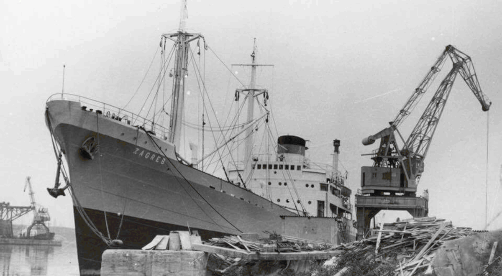

Znanje i profesionalni standardi
Promicanje stručnog usavršavanja kroz predavanja, stručne rasprave, seminare i razmjenu iskustava među pomorcima.
Udruga kapetana – Zagreb
Udruga pomorskih kapetana i časnika palube trgovačke mornarice – Zagreb
Okupljamo pomorske profesionalce radi promicanja pomorske struke, unapređenja profesionalnih standarda i međusobne suradnje.

O udruzi
Strukovna smo, dragovoljna, nestranačka i neprofitna udruga sa sjedištem u Zagrebu.
Povezujemo pomorske kapetane i časnike radi unapređenja hrvatskog pomorstva te promicanja i zaštite interesa članova. Djelujemo na području Republike Hrvatske i surađujemo sa srodnim udrugama i ustanovama u zemlji i inozemstvu.
Pročitajte Statut Udruge (TXT, 2015.)Naši ciljevi
Promicanje stručnog usavršavanja kroz predavanja, stručne rasprave, seminare i razmjenu iskustava među pomorcima.
Unapređenje sigurnosti plovidbe, zaštita okoliša te sudjelovanje u raspravama o pitanjima važnima za pomorstvo.
Povezivanje sa srodnim udrugama, savjetodavna pomoć pomorcima te izučavanje i promicanje hrvatske pomorske i brodarske tradicije.
Članstvo
Članstvo u Udruzi je dragovoljno, a članovi mogu biti redovni, pridruženi i počasni.
Redovni članovi mogu biti osobe sa zvanjem kapetana duge plovidbe, zapovjednika i časnika palubne straže. Pridruženi članovi mogu biti kapetani i časnici unutarnje plovidbe te druge fizičke i pravne osobe koje mogu doprinijeti unapređenju Udruge.
Za informacije o pristupanju, članarini i radu Udruge obratite nam se e-poštom. Uvjeti članstva uređeni su Statutom Udruge.
Pošaljite upit o članstvuKorisne informacije
Zahtjev za članstvo podnosi se Upravnom odboru. Javite nam se na udkapzg@gmail.com za informacije o pristupnici i uvjetima članstva.
Za podatke o članarini i načinu plaćanja obratite se Udruzi putem e-pošte na udkapzg@gmail.com.
Statut Udruge od 28. rujna 2015. dostupan je kao tekstualni dokument.
Kontakt
Za pitanja o članstvu, suradnji ili radu Udruge,
slobodno nam se obratite.